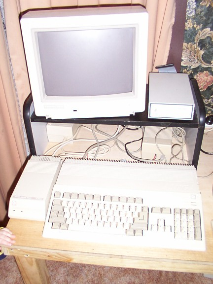
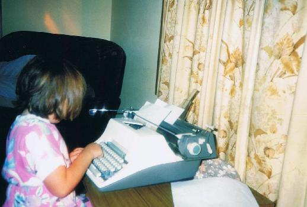

This section looks a little into my history. One of the earliest things I remeber doing was sitting at the Commodore 64 for hours typing in commands to change the colours of the the font and two background colours. As well as loading in my cassette tapes of lemonade stand and space invaders, which each took about 10 minutes to load!
Always interesed in technology and how things worked, I would also spend hours playing with an electronic typewritter.
© 2013 Rhiana Heath Freelancer. All Rights Reserved